右竟出山阴兰上乡吕超墓中，墓有铭，尝得墨本二枚，国号纪元俱泐。以其官随郡王国中军，又有己巳字，因定为齐永明十一年十一月葬。竟则止闻铭辞云是“郑氏作镜幽涷三商幽明镜”十一字，篆书，不能得墨本。六月中，中弟起明[188]归会稽，遂见此竟，告言径建初尺[189]四寸四分，质似铅，已裂为九，又失其二，然所阙皆华饰，而文字具在。未几，手拓见寄。铭有二层，与所传者绝异，文句
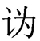
夺，取他竟铭校之，始知大较。外层云：“五月五日，大岁在未。吴□郑蔓作其镜，幽涷三商，周刻禺彊，白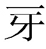
，众神容”，凡卅字。内层云：“吾作明幽竟涷三商周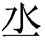
”，凡十字。上虞罗氏《古镜图录》[190]收金山程氏所藏一竟，文字略同，末云：“众神见容天禽”，较此多三字，而句亦未尽。他竟尚有作“天禽四守”者也。古人铸冶，多以五月丙午日，虞喜《志林》[191]谓“取纯火精以协其数”（《初学记》廿二引）[192]。今所见汉魏竟，带句，帐构铜[193]，凡勒年月者，大率云五月丙午日作；而五日顾未闻宜铸，唯索缕，采药，辟兵，却病之事，兴作甚多。后世推类，或并以造竟。家所臧唐代小镜一枚，亦云五月五日午时造，则此事当始于晋，至唐犹然。大岁在未，在字反左书，未年亦不知何年，未又似戊午或丙午，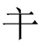
或作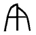
，得转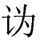
如未，所未详也。吴下一字，仅存小半，程氏臧竟作，罗氏题为“吴郡郑蔓镜”。吴越接壤，便于市卖，所释当塙。郡字并亦反左书，郑又如鄚，蔓又似，皆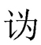
变。幽涷三商者，《关中金石记》尝以《仪礼》郑注“日入三商为昏”语释永康竟铭，然孔疏云，“商谓商量”，是刻漏名，则亦无与竟事。[194]《墨林快事》[195]以为三金，于义最协。他竟或云幽涷宫商，或云合涷白黄。宫为土，商为金[196]，金白土黄；竟则丹扬善铜，殽以银锡，其类三，其色黄白；幽殽声近相通，涷，水名，乃湅之误，湅又[197]为煉；殽煉三金，犹云合涷白黄，亦即幽涷宫商矣。禺彊者，《山海经》[198]云：“北方禺彊，人面鸟身。”郭注：“字玄冥，水神也。”竟之为物，仪形曜灵[199]，月为水精，故刻禺彊。禺字上有羡画[200]，他竟或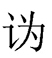
成萬。又有云“周刻罔象[201]”者，罔象亦水精，与此同意。白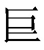
即伯牙[202]，建安竟[203]铭有“白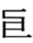
单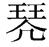
”语，徐氏同柏[204]云：“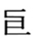
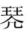
未详”。今按彼为伯牙弹琴，而此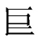
字尤缪，唯迹象可寻究。颇似樂饗，殆亦单琴之误也。据程氏竟，神容二字间，当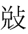
[205]见字，见容即见形矣。末三句十一字，并颂彫文刻镂之美。而竟止作四神人乘异兽，其二今阙。又有四乳，具存。内层之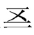
亦吾字，笔画不完，遂与予字相似。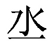
亦幽也，他竟多如此作。此铭在汉，当有全文，施之巨竟。后来娄经转刻，夺落舛误，弥失其初，遂至不可诵说。余以此竟出于故乡，铭文又不常见，长夏索居，辄加审释，虽多所穿凿，终亦不能尽通，聊记所获，以备忘失。又闻越竟铅泉，时或出土，而铅竟甚为希有；盖铅锡事本非宜，而此则窀夕所用，故犹刍灵木寓[206]，象物斯足，不复幽涷三商与。中华民国七年七月廿九日记。注 释
[187] 本篇据手稿编入，原无标题，有句读。
郑蔓，汉代吴郡（治所在今江苏苏州）著名铸镜人，后人造镜多假托其名。
[188] 起明 即周作人（1885—1967），号起孟，又作启孟、起明、启明，鲁迅的二弟。曾在绍兴浙江省立第五中学、北京大学、北京女子师范大学等校任教。抗日战争期间曾出任伪华北政务委员会教育总署督办。1918年6月他从北京回绍兴省亲，通过陈古遗得到吴郡郑蔓镜拓本，于7月25日寄鲁迅二枚，8月16日又寄四枚。
[189] 建初尺 参看本卷第66页注〔2〕。
[190] 罗氏 即罗振玉（1866—1940），字叔蕴、叔言，号雪堂，浙江上虞人，金石学家。清末曾任学部参事等职，民国后以清遗老自居，后任伪“满洲国”监察院长。《古镜图录》，三卷，共收古镜拓片一五九枚。金山程氏所藏镜，见该书卷中第二十九面，外层铭文可辨“五月五日大岁在未吴郡郑蔓作其□□涷三商白
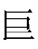
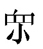
神见容天禽”等字；内层铭文为“吾作明幽竟涷三商周□”十字。[191] 虞喜（281—356） 字仲宁，余姚（今属浙江）人，晋代学者。曾为功曹，后不仕，专心著述。《志林》，《隋书·经籍志》著录三十卷，已佚。明代陶宗仪《说郛》、清代马国翰《玉函山房辑佚书》中均有辑本；鲁迅亦有辑校本一卷，现收《鲁迅辑录古籍丛编》第三卷。
[192] “取纯火精以协其数” 意思是取干支都属火的月、日进行冶炼，以符合阴阳五行的术数。此说本于汉代王充《论衡·乱龙》：“阳燧取火于天，五月丙午日中之时，消炼五石，铸以为器，乃能得火。”后来无论是否在五月丙午日铸器，铭文往往皆作“五月丙午”。《初学记》，类书，唐代徐坚等编，三十卷。
[193] 带句 衣带钩。句，通钩。帐构铜，古时帐幕上用以结构木架的铜件。
[194] 《关中金石记》 金石考古集，清代毕沅著，八卷。按这里的《关中金石记》系《中州金石记》之误。《中州金石记》亦为毕沅所著，五卷。其卷一“永康镜铭”条解释汉桓帝永康元年（167）所铸铜镜铭文中的“幽涷三商”一语说：“郑康成注《仪礼》云：日入三商为昏。孔颖达疏：商为商量，是漏刻之名。”《仪礼》，我国古代专记礼制仪式的儒家经典，毕沅上述引语，见于该书第二章“士昏礼”题下注疏，疏者为唐代贾公彦，非孔颖达。郑康成（127—200），名玄，字康成，北海高密（今属山东）人，东汉经学家。孔颖达（574—648），字冲远，衡水（今属河北）人，唐代经学家。
[195] 《墨林快事》 古器物、书画跋语集，明代安世凤著，十二卷。卷二有“三商者，商，金也：银、锡、铜也。一釜而和之，故曰幽炼”等语。又有“汉有善铜出丹阳”的记载，丹阳同丹扬。
[196] 宫为土，商为金 古代音乐有宫、商、角、徵、羽五声，古人认为它们同土、金、木、火、水五行有对应关系。
[197]
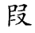
同假，借。[198] 《山海经》 十八卷，约公元前四世纪至二世纪间的作品，主要记述我国古代神话传说中的山水、地理、方物等。晋代郭璞曾为之作注。禺彊的故事见该书《海外北经》。
[199] 曜灵 屈原《天问》：“角宿未旦，曜灵安藏？”姜亮夫注：“戴震云：‘……曜灵，月也。’”
[200] 羡画 多出的笔画。
[201] 罔象 《史记·孔子世家》：“水之怪，龙、罔象。”
[202] 伯牙 相传为春秋时人，善弹古琴。
[203] 建安竟 东汉献帝建安十年（205）铸，原为金山程氏收藏。其铭文为：“吾作明镜幽涷三商周卫罔象五帝
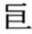
天皇三單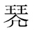
黄帝除凶朱鸟玄白虎青龙君宜高官子孙番昌建安十年造大吉 君宜□ 君宜□”。[204] 徐同柏 字籀庄，浙江嘉兴人，清代金石学者。著有《从古堂款识学》。他对建安镜的考释文字，见罗振玉《古镜图录》卷上第五面。
[205] 夺的古字。
[206] 刍灵木寓 旧时送葬用的草扎或木制的人畜。寓，通偶。